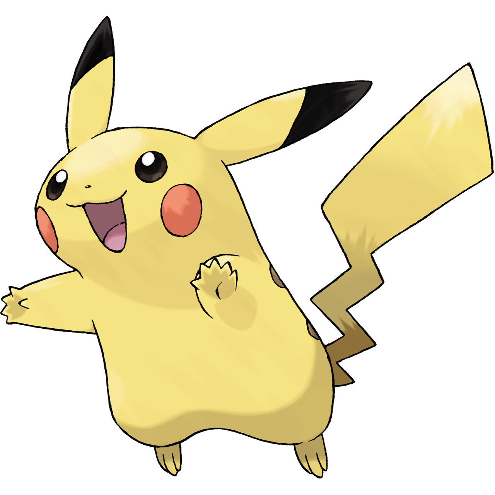

Présente-toi à Pikachu!
1. Briefly describe yourself by addressing the questions below: [contact-form to="thoy@broward.edu"][contact-field label="Je m'appelle..." type="name" required="1" /][contact-field label="La personnalité: Je suis... (3 adjectifs)" type="textarea" required="1" /][contact-field label="La personnalité: Je ne suis pas... (3 adjectifs)" type="textarea" required="1" /][contact-field label="Je suis..." type="select" options="grand(e),de taille moyenne,petit(e)" required="1" /][contact-field label="J'ai les cheveux..." type="select" options="blonds,roux,châtains,noirs,d'une autre couleur,Je suis chauve" required="1" /][contact-field label="J'ai les cheveux..." type="select" options="courts,moyens,longs,Je suis chauve" required="1" /][contact-field label="J'ai les cheveux..." type="select" options="raides,ondulés,bouclés,frisés,Je suis chauve" required="1" /][contact-field label="J'ai les yeux..." type="select" options="bleus,verts,marron,noirs" required="1" /][/contact-form] 3. When you are finished, be sure to submit, then click here!